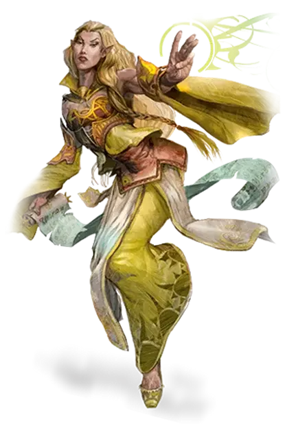

Эльф
Elf

— Могла ли я думать, что где-то на свете есть подобная красота!.. — тихо выговорила Золотая Луна. Дневной переход выдался нелёгким, зато награда, ожидавшая в конце, превосходила всякое вероятие. С высокого утёса взглядам путников открылся овеянный легендами город Квалиност.
По углам города возносились, подобно сверкающим веретёнам, четыре высоких тонких шпиля, сложенных из белого камня, отделанного серебром. От шпиля к шпилю тянулись невесомые арки. Их некогда выковали искуснейшие мастера-гномы; каждая способна была выдержать вес марширующих армий, но казалось — сядет птица, и они рухнут. Арки обозначали границу города; Квалиност не прятался за стеной, но, наоборот, с любовью распахивал объятия лесу.
—Маргарет Уэйс и Трейси Хикмэн, Драконы осенних сумерек
Эльфы — это волшебный народ, обладающий неземным изяществом, живущий в мире, но не являющийся его частью. Они живут в местах, наполненных воздушной красотой, в глубинах древних лесов или в серебряных жилищах, увенчанных сверкающими шпилями и переливающихся волшебным светом. Там лёгкие дуновения ветра разносят обрывки тихих мелодий и нежные ароматы. Эльфы любят природу и магию, музыку и поэзию, и всё прекрасное, что есть в мире.
Стройные и изящные
Обладая неземным изяществом и тонкими чертами, эльфы кажутся людям и представителям других рас чересчур красивыми. В среднем, они немного ниже людей, их рост колеблется от 5 до 6 футов (от 150 до 185 сантиметров). Они стройнее людей, и весят от 100 до 145 фунтов (от 45 до 65 килограмм). Мужчины и женщины почти одинакового роста, и мужчины весят лишь незначительно больше.
Цвета кожи у эльфов включают в себя все человеческие оттенки, а также цвета с медным, бронзовым и голубовато-белым отливом. Волосы помимо человеческих цветов могут быть зелёными или синими, а глаза приобретать цвет жидкого золота или серебра. У эльфов не растут волосы на лице, и почти отсутствуют волосы на теле. Они предпочитают элегантную одежду ярких цветов и простые, но красивые украшения.
Неподвластный времени взгляд
Эльфы способны жить более 700 лет, что даёт им более широкий взгляд на проблемы, беспокоящие короткоживущие расы. События чаще кажутся им забавными, чем волнующими, и ими чаще движет любопытство, чем жадность. В случае мелких происшествий они чаще проявляют равнодушие и остаются в стороне. В случае же преследования цели, выполнения задания или изучения нового навыка эльфы остаются собранными и целеустремлёнными. Они не торопятся заводить друзей или врагов, а прощают еще медленнее. На мелкие оскорбления они отвечают пренебрежением, на крупные же — местью.
Подобно молодым ветвям дерева эльфы проявляют гибкость перед лицом опасности. Они верят в дипломатию и предпочитают с помощью компромисса уладить разногласие прежде чем оно перешло в насилие. Они способны отступить перед лицом вторжения вглубь своих лесов, уверенные, что просто смогут подождать, пока захватчики уйдут. Но если придёт нужда, эльфы способны проявить свою воинскую сторону, продемонстрировав владение мечом, луком и стратегией.
Скрытые лесные королевства
Большинство эльфов живёт в маленьких лесных деревнях, спрятанных среди деревьев. Эльфы охотятся на дичь, собирают пищу и растят овощи. Их навыки и магия позволяют им прокормить себя без вырубки леса и вспахивания земли. Они талантливы в ремёслах, изготавливают качественную одежду и предметы искусства. Их контакты с другими народами обычно ограничены, но некоторые эльфы всё же преуспели в торговле, выменивая свои товары на металлы, которые эльфы не любят добывать сами.
Эльфы, встречающиеся за пределами родных земель, чаще всего оказываются путешествующими менестрелями, артистами или мудрецами. Людские дворяне соревнуются за услуги эльфа-наставника, способного обучить их детей фехтованию или магии.
Исследования и приключения
Эльфы берутся за приключения из страсти к путешествиям. Благодаря большому сроку жизни, они могут посвятить столетия изучению и исследованию. Им не нравится темп человеческого общества, упорядоченный изо дня в день, но полностью меняющийся за десятилетие, и они предпочитают найти себе занятие, позволяющее им часто путешествовать, устанавливая свой собственный темп жизни. Эльфам также нравится оттачивать своё воинское мастерство, или добиваться великой волшебной мощи, и приключения способствуют этому. Некоторые могут присоединиться к повстанцам, борющимся против угнетателей, а другие становятся борцами за моральные ценности.
Таблицы эльфов (MToF)
В этом разделе приведены таблицы для Мастеров и игроков, желающих выбрать или случайно сгенерировать подробности об эльфах.
Эльфийские безделушки
| к8 | Безделушка |
| 1 | Небольшой блокнот, написанное содержимое которого исчезает через 1 час. |
| 2 | Кристаллическая линза из слоновой кости и золота, которая заставляет всё наблюдаемое через неё казаться окружённым частицами пёстрого света. |
| 3 | Маленькая, размером с грецкий орех, золотая пирамида, покрытая эльфийскими символами. |
| 4 | Брошь для мантии из эмали в форме бабочки; если снять брошь, то она превратится в настоящую бабочку и вернётся тогда, когда вы соберётесь снова надеть мантию. |
| 5 | Золотой компас, указывающий на ближайший портал в Страну Фей, в пределах 10 миль. |
| 6 | Маленький серебряный волчок, вращающийся бесконечно, пока его не остановят. |
| 7 | Маленькая певчая птица из эмали, золотистой проволоки и драгоценного камня; если произнести её имя на Эльфийском, то безделушка воспроизведёт птичье пение. |
| 8 | Маленькое изделие из эмали в виде цветка, если её надеть на чьи-либо волосы, то она оживает, окутывая живой лозой с цветочками волосы носителя; выдернув любой цветок с лозы, изделие возвращается в неодушевлённую форму. |
Сюжетные зацепки для эльфа-приключенца (не дроу)
| к8 | Зацепка |
| 1 | Вы полагаете, что ключ к воссоединению эльфов с Кореллоном лежит где-то в остальном мире, а не среди эльфийского общества, и поэтому вы полны решимости найти его. |
| 2 | Ваш брат был убит разъярённым чудовищем. Вы не успокоитесь, пока не выследите и не убьёте эту тварь. |
| 3 | Ворон принёс вам зашифрованное послание от старого друга, который нуждается в вашей помощи, но сообщение было расплывчато в части о местонахождении друга. Вы пытаетесь проследовать многолетней тропой и найти своего друга. |
| 4 | Красивый эльф завоевал ваше сердце, а затем разбил его. Если вы заработаете достаточно золота и славы, отважившись отправится в приключения, то возможно вернёте утраченную любовь. |
| 5 | Ваш отец считает, что вы слишком слабы для путешествий, но он ошибается, и вы докажите это. |
| 6 | После смерти вспоминают только тех, кто совершил великие дела. Барды и следующие поколения будут чтить ваши подвиги. |
| 7 | Вы втайне влюблены в одного из членов своей группы искателей приключений, и вы не можете смириться с мыслью, что эта личность может пострадать. |
| 8 | При рождении ваша бабушка предсказала, что однажды вы будете править людским королевством. Вы отправились в путь в поисках своей судьбы. |
Сюжетные зацепки для дроу-приключенца
| к8 | Зацепка |
| 1 | Вы подслушали, что члены вашего собственного дома собираются отравить вас, поэтому вы, чтобы спастись, сбежали из Подземья. Вы не вернётесь обратно, пока не соберёте достаточно состояния, чтобы окружить себя верными наёмными телохранителями. |
| 2 | Вы были порабощены и наказаны за попытку отравления влиятельного соперника, но вы спаслись и сбежали на поверхность. Если вы вернётесь в Подземье и будете пойманы, вас снова обратят в рабство. |
| 3 | Вы состояли в любовных отношениях с высокопоставленной жрицей Лолс, что означало повышение вашего статуса. Когда она устала от вас, ваш статус понизился, и поэтому вы ушли. |
| 4 | Вы убили дроу из более могущественного дома в дуэли из-за публичного оскорбления. Дом убитого дроу поклялся уничтожить ваш дом, если вы не сдадитесь им в плен. Ваш род убедил вас покинуть Подземье. Вы до сих пор задумываетесь, что стало с вашим домом. |
| 5 | Ваша близкая подруга оказалась последовательницей Эйлистри. Подозрение пало на всех из её окружения. Побег был молчаливым признанием вины, даже если вы ничего не знали об этом, но вас бы преподнесли в жертву Лолс, если бы вы остались. |
| 6 | Вы были членом одной из групп наземных налётчиков, которая оказалась в западне и была захвачена. Спустя года пребывания в плену, вы поняли, что большинство того, о чём говорили жрицы Лолс о внешнем мире, было ложью. Отныне, вы решили сами столкнуться с правдой. |
| 7 | Всю вашу жизнь вас отталкивало и пугало коварство вашего рода. При первой возможности вы вызвались на наземный налёт, после чего отстали от группы и скрылись позади. Отныне, вас ненавидят и бояться везде, куда бы вы ни пошли, однако вы нашли и подружились с алкоголиками-смертниками, что в трудную минуту поддержат вас кружкой эля или рома, или что ещё там пьют эти дроу. |
| 8 | Вы были членом делегации с дипломатической миссией в другой город дроу, когда дуэргары напали на ваш караван ради рабов и сокровищ. Вы были единственным, кому удалось сбежать. Если бы вы вернулись домой, вас бы отравили или бы сделали что похуже за ваш провал. Стать наёмником показалось для вас наилучшим вариантом. |
Специализация домов дроу
| к10 | Специализация |
| 1 | Оружие из адаманта |
| 2 | Наёмные убийства |
| 3 | Гигантские пауки под контролем разума |
| 4 | Галлюциногенные вещества |
| 5 | Высокостатусные рабы и те, кого принесут в жертву |
| 6 | Предметы, захваченные в налётах на поверхности |
| 7 | Дешёвые рабы гуманоиды |
| 8 | Карты Подземья |
| 9 | Яды |
| 10 | Пресмыкающиеся вьючные животные |
Эльфийские имена
Эльфы считаются детьми, пока они не объявят себя взрослыми, где-то вскоре после сотого дня рождения. До этого времени их называют детским именем.
Достигая зрелости, эльф выбирает себе новое, взрослое имя, хотя те, кто знал его под детским именем, могут продолжать пользоваться им. Имя каждого взрослого эльфа уникально, хотя может отражать имена уважаемых личностей или членов семьи. Мужские и женские имена различаются лишь незначительно, и чёткой границы тут нет. Также каждый эльф носит фамилию, обычно это сочетание нескольких эльфийских слов. Некоторые эльфы, путешествующие среди людей, переводят фамилию на Общий, другие сохраняют эльфийскую версию.
Детские имена: Ара, Брин, Валь, Дель, Иннил, Лаэль, Мелла, Наиль, Наэрис, Раэль, Ринн, Сай, Силлин, Тиа, Фанн, Фаэн, Эрин
Мужские взрослые имена: Адран, Арамиль, Араннис, Ауст, Аэлар, Бейро, Берриан, Варис, Галинндан, Ивеллиос, Иммераль, Каррик, Куарион, Лаусиан, Миндартис, Паэлиас, Перен, Риардон, Ролен, Совелисс, Тамиорн, Таривол, Терен, Хадарай, Химо, Хэйян, Эниалис, Эрдан, Эреван
Женские взрослые имена: Адрие, Альтеа, Анастрианна, Андрасте, Антинуа, Бетринна, Бирель, Вадания, Валанте, Джеленетт, Друсилиа, Йелениа, Каэлинн, Квеленна, Квиласи, Кейлет, Ксанафия, Лешанна, Лиа, Миали, Мэриэль, Найвара, Сариэль, Силакви, Теирастра, Тиа, Фелосиаль, Шава, Шанайра, Энна
Фамилии (перевод на Общий): Амакиир (Сверкающий Цветок), Амастасия (Звёздный Цветок), Галанодель (Лунный Шёпот), Ильфелкиир (Сверкающий Бутон), Ксилосент (Золотой Лепесток), Лиадон (Серебряный Лист), Найло (Ночной Бриз), Сианодель (Лунный Ручей), Холимион (Алмазная Роса)
Высокомерные, но любезные
Хотя эльфы могут быть высокомерными, они обычно любезны даже с теми, кто не оправдал их высоких ожиданий. Как правило, это все не-эльфы. Но всё же, они способны найти что-то хорошее почти в каждом.
О дварфах. «Дварфы – скучные, неотёсанные болваны. Но свой недостаток чувства юмора, утончённости и манер они способны компенсировать отвагой. И смею заметить, изделия их лучших кузнецов способны сравниться с эльфийскими».
О полуросликах. «Полурослики — народ простых удовольствий, и это не повод их презирать. Они хороший народ, заботятся друг о друге и ухаживают за своими садами, и они доказали, что они намного крепче, чем это может показаться, когда возникает такая необходимость».
О людях. «Вся эта поспешность, их амбиции и стремление совершить что-нибудь, прежде чем окончатся их краткие жизни — всё это кажется иногда настолько бесполезным. Но взгляните на то, чего они добились, и вы начнёте ценить их достижения. Если бы только они могли немного сбавить обороты и приобрести хоть толику изящества».
Особенности эльфов
Ваш персонаж эльф обладает рядом разнообразных качеств, отражающих тысячелетия эльфийского совершенствования.
Увеличение характеристик. Значение вашей Ловкости увеличивается на 2.
Возраст. Несмотря на то, что физически эльфы взрослеют в том же возрасте, что и люди, их понимание о взрослении выходит за рамки физического развития, и располагается в сфере житейского опыта. Обычно эльф получает статус взрослого и взрослое имя в возрасте 100 лет, и может прожить до 750 лет.
Мировоззрение. Любое.
Размер. Рост эльфов колеблется между 5 и 6 футами (152 и 183 сантиметрами), у них стройное телосложение. Ваш размер — Средний.
Скорость. Ваша базовая скорость ходьбы составляет 30 футов.
Тёмное зрение. Привыкнув к сумраку леса и ночному небу, вы обладаете превосходным зрением в темноте и при тусклом освещении. На расстоянии в 60 футов вы при тусклом освещении можете видеть так, как будто это яркое освещение, и в темноте так, как будто это тусклое освещение. В темноте вы не можете различать цвета, только оттенки серого.
Обострённые чувства. Вы владеете навыком Восприятие.
Наследие фей. Вы совершаете с преимуществом спасброски от состояния «очарованный», и вас невозможно магически усыпить.
Транс. Эльфы не нуждаются во сне. Вместо этого они погружаются в глубокую медитацию, находясь в полубессознательном состоянии до 4 часов в сутки (обычно такую медитацию называют трансом). Во время этой медитации вы можете грезить о разных вещах. Некоторые из этих грёз являются ментальными упражнениями, выработанными за годы тренировок. После такого отдыха вы получаете все преимущества, которые получает человек после 8 часов сна.
Языки. Вы можете говорить, читать и писать на Общем и Эльфийском языках. Эльфийский язык текучий, с утончёнными интонациями и сложной грамматикой. Эльфийская литература богата и разнообразна, а стихи и песни известны среди представителей других рас. Многие барды учат эльфийский язык, чтобы добавить песни в свой репертуар.
Разновидности. Древний раскол среди эльфийских народов привёл к возникновению трёх видов: высших эльфов, лесных эльфов и тёмных эльфов, которых обычно называют дроу. Выберите один из этих видов. В некоторых мирах они делятся еще сильнее, (например на солнечных и лунных эльфов в мире Забытых Королевств) так что если хотите, можете выбрать более уточнённый вариант. Но помимо этого в мультивселенной D&D существует множество видов эльфов. С разрешения вашего Мастера вы можете выбрать один из них.
Высший эльф
Поскольку вы — высший эльф, у вас острый ум и вы знакомы, по крайней мере, с основами магии. Во многих мирах D&D существует два вида высших эльфов. Один вид (который включает серых эльфов и эльфов долин Серого Ястреба, сильванести Саги о Копье и солнечных эльфов Забытых Королевств) высокомерен и замкнут, считая себя выше не-эльфов и даже других эльфов. Другой вид (включающий высших эльфов Серого Ястреба, квалинести из Саги о Копье и лунных эльфов из Забытых Королевств) более распространён и дружелюбен, и часто встречается среди людей и других рас.
У солнечных эльфов Фаэруна (также называемых золотыми эльфами или эльфами восхода) бронзовая кожа и волосы медного, чёрного или золотистого оттенка. У них золотые, серебристые или чёрные глаза. Лунные эльфы (также называемые серебряными или серыми эльфами) гораздо бледнее, с алебастровой кожей, имеющей иногда оттенок синего. У них часто серебристо-белые, чёрные или синие волосы, но и различные оттенки светлых, коричневых и рыжих тонов также не являются редкими. У них синие или зелёные глаза с золотыми вкраплениями.
Увеличение характеристик. Значение вашего Интеллекта увеличивается на 1.
Владение эльфийским оружием. Вы владеете длинным мечом, коротким мечом, коротким и длинным луками.
Заговор. Вы знаете один заговор из списка заклинаний волшебника. Базовой характеристикой заклинаний для его использования является Интеллект.
Дополнительный язык. Вы можете говорить, читать и писать на ещё одном языке, на ваш выбор.
Лесной эльф
Поскольку вы — лесной эльф, у вас обострённые чувства и интуиция, и ваши стремительные ноги несут вас быстро и незаметно через ваши родные леса. Эта категория включает диких эльфов Серого Ястреба и кагонести из Саги о Копье, а также расы, называемые лесными эльфами Серого Ястреба и Забытых Королевств. В Фаэруне лесные эльфы (также называемые дикими или зелёными) являются затворниками, не доверяющими не-эльфам.
Кожа лесных эльфов, как правило, имеет медный оттенок, иногда со следами зелёного. У них часто коричневые и чёрные волосы, но иногда они бывают светлого или бронзового оттенков. У них зелёные, карие или орехового цвета глаза.
Увеличение характеристик. Значение вашей Мудрости увеличивается на 1.
Владение эльфийским оружием. Вы владеете длинным мечом, коротким мечом, коротким и длинным луками.
Быстрые ноги. Ваша базовая скорость ходьбы увеличивается до 35 футов.
Маскировка в дикой местности. Вы можете предпринять попытку спрятаться, даже если вы слабо заслонены листвой, сильным дождём, снегопадом, туманом или другими природными явлениями.
Тёмный эльф (дроу)
Как дроу, вы прониклись магией Подземья, подземного царства чудес и ужасов, которое редко можно увидеть на поверхности. Вы чувствуете себя в тени как дома и благодаря своей врожденной магии учитесь призывать и свет, и тьму. У ваших сородичей обычно ярко-белые волосы и разноцветная сероватая кожа.
Культ богини Лолс, Королевы Пауков, развратил некоторые из старейших городов дроу, особенно в мирах Орта и Торила. Эберрон, Кринн и другие царства на данный момент избежали влияния культа. Везде, где таится культ, герои-дроу стоят на передовой в войне против него, стремясь разорвать паутину Лолс.
Подробнее с лором дроу можно ознакомится в статье «Бестиарий: Дроу»
Увеличение характеристик. Значение вашей Харизмы увеличивается на 1.
Превосходное тёмное зрение. Ваше тёмное зрение имеет радиус 120 футов.
Чувствительность к солнцу. Вы совершаете с помехой броски атаки и проверки Мудрости (Восприятие), основанные на зрении, если вы, цель вашей атаки или изучаемый предмет расположены на прямом солнечном свете.
Магия дроу. Начиная с 3-го уровня, вы можете накладывать заклинание огонь фей [faerie fire] с помощью этой особенности. Начиная с 5-го уровня вы также можете накладывать заклинание тьма [darkness] с помощью этой особенности. После накладывания одного из этих заклинаний с помощью особенности вы должны закончить продолжительный отдых, прежде чем сможете вновь наложить его таким образом.
Кроме того, вы знаете заговор пляшущие огоньки [dancing lights]. Базовой характеристикой для этих заклинаний является Харизма.
Владение оружием дроу. Вы владеете рапирой, коротким мечом и ручным арбалетом.
Морской эльф (MTF)
Источник: Mordenkainen’s Tome of Foes
С самого начала мультивселенной морские эльфы были очарованы первозданной красотой океанов. Пока другие эльфы путешествовали от одного царства к другому, морские эльфы странствовали по глубочайшем течениям и исследовали водные пространства через сотни миров. В нынешнее время, они проживают в небольших и скрытых поселениях близ морских мелководий и на Элементальном Плане Воды.
Морские эльфы имеют следующие особенности, отличающие их от всех прочих эльфов.
Увеличение характеристик. Значение вашего Телосложения увеличивается на 1.
Боевая подготовка морских эльфов. Вы получаете владение копьём, трезубцем, лёгким арбалетом и сетью.
Дитя морей. Ваша скорость плавания равна 30 футов, и вы можете дышать под водой.
Морские побратимы. Используя простые жесты и звуки, вы можете наладить контакт с любым существом, которое имеет врождённую скорость плавания.
Языки. Вы можете говорить, читать и писать на Акване.
Сахуагины: угроза из глубин
В своём водном пространстве, также, как и другие эльфы на суше, морские эльфы встречаются с множеством опасностей, но ни одна из них не смертельна настолько как сахуагины.
Непримиримая вражда между этими двумя расами связана со свирепым территориальным отношением у сахуагинов, которые считают все моря своими владениями и не выносят любую другую разумную цивилизацию.
Мало того, сахуагины поклоняются акульему богу Секолаху, который является заклятым врагом Глубинного Сашеласа, божества морских эльфов. Даже если вдруг эльфы необъяснимым образом начнут поклоняться Секолаху, сахуагины всё равно останутся их врагами – в своём безумстве крови сахуагины нередко разрывают на части и представителей своей расы!
Шадар-кай (MTF)
Источник: Mordenkainen’s Tome of Foes
Присягнув служить Королеве Воронов, таинственные шадар-каи путешествуют в Материальный План из Царства Теней для того, чтобы выполнять её поручения. Когда-то давно они были феями, как и остальная часть их эльфийского рода, но теперь они существуют в странной форме на грани жизни и смерти. Шадар-каи и эладрины являются прямыми противоположностями друг друга: одних переполняют эмоции, другие же практически лишены их.
Шадар-каи имеют следующие особенности, отличающие их от всех остальных эльфов.
Увеличение характеристик. Значение вашего Телосложения увеличивается на 1.
Некротическое сопротивление. Вы получаете сопротивление урону некротической энергией.
Благословение Королевы воронов. Бонусным действием вы можете магическим образом телепортироваться в свободное пространство на расстояние до 30 футов вашей видимости. Применив эту особенность, вы не сможете ею воспользоваться, пока не закончите продолжительный отдых.
Начиная с 3-го уровня, при телепортации с помощью этой особенности, вы также получаете сопротивление всему урону. Сопротивление длится до начала вашего следующего хода. В течение этого времени, ваш облик становится призрачным и полупрозрачным.
Эладрин (MTF)
Источник: Mordenkainen’s Tome of Foes
Эладрины – это эльфы чьей родиной является Страна Фей, царство красоты, непредсказуемых эмоций и безграничной магии. Каждый эладрин отражает одно из четырёх времён года, что выражается их цветовой гаммой, соответствующей сезону, которая так же влияет на настроение эладрина:
Осень – сезон покоя и доброй воли, время, когда собирают летний урожай и делятся им со всеми.
Зима – сезон раздумий и скорби, когда жизненная энергия мира дремлет.
Весна – сезон радости и торжества, отмеченное весельем из за ухода зимней горечи.
Лето – сезон храбрости и враждебности, время необузданной энергии.
Некоторые эладрины сохраняют свою связь с определённым временем года всю свою жизнь, в то время как другие изменяются, принимая особенности нового сезона.
После завершения продолжительного отдыха любой эладрин может поменять своё время года. Эладрин может выбрать то же время года, что и в окружающем его мире, либо более соответствующее его текущему эмоциональному состоянию. Например, эладрин может принять облик осени, если он чувствует себя удовлетворённым, другой же может принять облик зимы, если погрузится в печаль, третий может принять облик весны, если будет чувствовать радость, а из-за проявления ярости, эладрин может изменится в летний облик.
Эладрины имеют следующие общие особенности, вдобавок к особенностям, характерным остальным эльфам. Выберите время года вашего эладрина: осень, зима, весна или лето.
Увеличение характеристик. Значение вашей Харизмы увеличивается на 1.
Фейский шаг. Вы можете бонусным действием магическим образом телепортироваться в свободное пространство, которое можете видеть в пределах 30 футов. Использовав эту особенность, вы не сможете его повторить, пока не завершите короткий или продолжительный отдых.
При достижении 3-го уровня, ваш Фейский шаг получает дополнительный эффект в зависимости от вашего времени года; если эффект требует пройти спасбросок, то его Сл будет равна 8 + ваш Бонус мастерства + модификатор вашей Харизмы :
- Осень. Сразу после того, как вы используете Фейский шаг, то выбранные вами существа (макс. 2) в пределах 10 футов от вас, должны преуспеть в спасброске Мудрости, иначе будут очарованы вами на 1 минуту, либо пока вы или ваши спутники не нанесёте любой урон по нему.
- Зима. Когда вы используете Фейский шаг, одно существо по вашему выбору, которое вы можете видеть в пределах 5 футов от вас, до того, как вы телепортируетесь, должно преуспеть в спасброске Мудрости, иначе станет испугано вами до конца вашего следующего хода.
- Весна. Когда вы используете Фейский шаг, вы можете коснуться одного согласного существа в пределах 5 футов от вас. Это существо затем перемещается, вместо вас, в свободное пространство по вашему выбору, которое вы можете видеть в пределах 30 футов от себя.
- Лето. Сразу после того, как вы используете Фейский шаг, каждое существо по вашему выбору, которых вы можете видеть в пределах 5 футов от вас, получает урон огнём, равный вашему модификатору Харизмы (минимум 1 урона).
Весна
| к4 | Весенняя черта характера |
| 1 | Каждый день – самый счастливый день в вашей жизни. |
| 2 | Ко всему вы подходите с энтузиазмом, даже к самому обыкновенному занятию. |
| 3 | Вы любите музыку и песни. Вы начинаете выступать, если это никто не делает. |
| 4 | Вы не можете долго усидеть на одном месте. |
| к4 | Слабость весны |
| 1 | Вы много пьёте. |
| 2 | Тяжкий труд – не ваше занятие. Вы предпочитаете жить беззаботно. |
| 3 | Красивое лицо мгновенно сводит вас с ума, но ваши мечтания прекращаются с той же скоростью. |
| 4 | Если что-то стоит усилий, то это стоит делать снова и снова. |
Лето
| к4 | Летняя черта характера |
| 1 | Вы считаете, что прямая конфронтация – лучший способ решать проблемы. |
| 2 | Чрезмерная сила может решить все проблемы. Чем сложнее проблема, тем больше силы нужно применить. |
| 3 | Вы держитесь уверенно, чтобы другие могли полагаться на вас. |
| 4 | Вы придерживаетесь тактики запугивания. Лучше предотвращать сражения, демонстрируя свою силу нежели вредить другим. |
| к4 | Слабость лета |
| 1 | Вы упрямы. Пускай другие меняются. |
| 2 | Лучший вариант – быстрый, неожиданный, ошеломляющий. |
| 3 | Сначала бей, потом спрашивай. |
| 4 | Ваша ярость помогает вам преодолеть любые препятствия. |
Осень
| к4 | Осенняя черта характера |
| 1 | Если кому-то необходима помощь, вы никогда не откажите ему. |
| 2 | Вы делитесь тем, что имеете, не заботясь о своих собственных потребностях. |
| 3 | Не бывает простой трапезы, лишь пир горой. |
| 4 | Вы всегда запасаетесь вкусной едой и напитками. Вы ненавидите уходить без таких жизненных благ. |
| к4 | Слабость осени |
| 1 | Вы без раздумий доверяете другим. |
| 2 | Вы так любите делится с другими, что часто оставляете себя без необходимых припасов. |
| 3 | Каждого с кем встретитесь, вы будете считать своим другом, либо возможным другом. |
| 4 | Вы слишком много тратите на удобства прочих существ. |
Зима
| к4 | Зимняя черта характера |
| 1 | Если что-то плохое может произойти, то оно обязательно произойдёт. |
| 2 | Вы сохраняете то, что имеете. Лучше голодать сегодня, и быть сытым завтра. |
| 3 | Жизнь полна опасностей, но вы готовы к ним. |
| 4 | Потратил монету однажды — потерял её навсегда. |
| к4 | Слабость зимы |
| 1 | Со временем всё умрёт. Зачем создавать то, что когда-нибудь разрушится? |
| 2 | Для вас ничто не имеет значения, и вы позволяете другим руководить вашими действиями. |
| 3 | Ваши потребности важнее всего. Зимой каждый должен заботиться о самом себе. |
| 4 | Вы разговариваете лишь для того, чтобы указать на недостатки в других планах. |
Метка тени (RLW)
Источник: Eberron: Rising from the Last War
Метка Тени позволяет эльфам плести иллюзии, создавая магию, для отвлечения или восхищения. Она также позволяет своему носителю манипулировать тенями, позволяя ему избегать обнаружения.
Дома Теней
Лидер: Дома Фиарлан - Эльвинора Элорренти д’Фиарлан; Дома Туранни - Элар д’Туранни
Штаб-квартира: Дома Фиарлан - Владения (различные); Дом Туранни - Порт Регал (Лазаарскиие Княжества)
Эльфы носили Метку Тени на протяжении тысячелетий. Носители Метки покинули Аеренал после конфликта, уничтожившего Метку Смерти и основали Дом Фиарлан на Кхорвайре. Эти эльфы-опытные артисты, имеющие доступ ко всевозможным местам и тайнам. Мало кому известно, что в Доме Фиарлан всегда существовало элитное подразделение шпионов и убийц. Только особые клиенты - дворяне, лорды-купцы и им подобные имеют доступ к этим шпионам.
Ближе к концу Последней Войны между основными семьями Дома вспыхнул ожесточенный конфликт. Известный ныне как Теневой раскол, он привел к расколу внутри Фиарлан и основанию Дома Туранни. Дом Фиарлан продолжает предоставлять развлекательные услуги и помощь шпионов к западу от Земли Скорби, в то время как Туранни действует на восточных землях. Как правило, эльфы Фиарлан-лучшие шпионы, а агенты Туранни-лучшие убийцы.
Туранни и Фиарлан поддерживают мирные отношения, но их соперничество глубоко укоренилось.
Поговаривают, что именно барон Элар д’Туранни несет ответственность за Теневой раскол. Правящий Домом из анклава в Порте Регал, его всегда сопровождает таинственная пара, которая, по слухам, является воплощением самой тени. Ускользающий зверь является символом молодого дома.
Земли Дома Фиарлан, известные как Владения, являются главными центрами искусств Пяти Наций, каждый из которых сосредоточен на определенной художественной традиции: письменной речи, искусстве движения, музыке, материальном искусстве, а также на искусстве иллюзий, кукол, ораторском и актерском мастерстве. Баронесса Элвинор Элорренти возглавляет Дом из последнего центра, Поместья Теней, находящегося в Шарне. Гидра является символом Дома Фиарлан.
Если ваш персонаж — эльф с меткой тени, то используйте этот вариант подрасы со следующими особенностями.
Увеличение характеристик. Значение вашей Харизмы увеличивается на 1.
Интуиция лукавого. Когда вы совершаете проверку Харизмы (Выступление) или Ловкости (Скрытность), вы можете добавить к4 к результату проверки.
Очертания теней. Начиная с 3-го уровня, вы можете накладывать заклинание невидимость [invisibility], с помощью этой особенности. После накладывания этого заклинания с помощью особенности вы должны закончить продолжительный отдых, прежде чем сможете вновь наложить его таким образом.
Кроме того, вы знаете заговор малая иллюзия [minor illusion]. Базовой характеристикой для этих заклинаний является Харизма.
Заклинания метки. Если вы владеете умением «Использование заклинаний» или «Магия договора», то заклинания из таблицы «Заклинания метки тени» добавляются в список заклинаний вашего класса заклинателя.
Заклинания метки тени
Бледный эльф (EGW)
Источник: Explorer’s Guide to Wildemount
Бледные эльфы — это мистический и проницательный народ с кожей такой же бледной, как поверхность самой большой луны Экзандрии. В этом столетии они вышли из Бледной Рощи и бродят по миру с детским любопытством.
Увеличение характеристик. Значение вашей Мудрости увеличивается на 1.
Острый ум. Вы совершаете с преимуществом проверки Интеллекта (Расследование) и Мудрости (Проницательность).
Благословение Лунного ткача. Начиная с 3-го уровня, вы можете накладывать заклинание усыпление [sleep] с помощью этой особенности. Начиная с 5-го уровня, вы также можете накладывать заклинание невидимость [invisibility] (нацеленное только на себя) с помощью этой особенности. После накладывания одного из этих заклинаний с помощью особенности вы должны закончить продолжительный отдых, прежде чем сможете вновь наложить его таким образом.
Кроме того, вы знаете заговор свет [light]. Базовой характеристикой для этих заклинаний является Мудрость. Заклинания, накладываемые с помощью данной особенности, не требуют материальных компонентов.
Разновидности эльфов Unearthed Arcana
Авариэль
Авариэли — крылатые эльфы. Эти редкие существа были более распространены, когда миры мультивселенной были молоды, но частые конфликты с драконами сильно сокращали численность крылатых эльфов. Тем не менее, несколько колоний сохранились то тут, то там на Материальном Плане и на Плане Воздуха.
Полёт. Вы можете летать со скоростью 30 футов. Для этого вы не должны носить ни средний, ни тяжёлый доспех.
Языки. Вы можете говорить, читать и писать на Ауране.
Гругач
Гругачи мира Серого Ястреба избегают контактов с другими людьми, предпочитая утешение в глухих лесах и общение с дикими животными. Даже другие эльфы вызывают у них подозрения.
Гругачи склонны к хаосу и нейтралитету. Они не чувствуют особого долга ни перед кем, кроме своего народа и леса, который является их домом. Неприятности за их границами должны оставаться там. В то же время у них мало амбиций, кроме мирного сосуществования с природой.
Если кто-то достаточно глуп, чтобы потревожить царство гругачей, эти эльфы берутся за оружие и сражаются не на шутку. Гругач овладевает основным оружием, необходимым для охоты и добычи в лесу. Каждая роща становится снайперским гнездом, а каждый лесной луг — точкой засады. Гругачи устанавливают ямы, заполненные кольями, ловушки, которые оставляют незваного гостя беспомощным для стрел гругача, и другие ловушки, предназначенные скорее для убийства, чем для поимки. Гругачи сражаются насмерть, чтобы сохранить свои владения.
Увеличение характеристик. Ваш показатель Силы увеличивается на 1.
Боевая подготовка гругачей. Вы владеете копьем, коротким луком, длинным луком и сетью.
Заговор. Вы знаете один заговор на ваш выбор из списка заклинаний друида. Мудрость — это ваша базовая характеристика для этого заклинания.
Языки. В отличие от других эльфов, вы не говорите, не читаете и не пишете на Общем. Вместо этого вы говорите, читаете и пишете на Сильване.